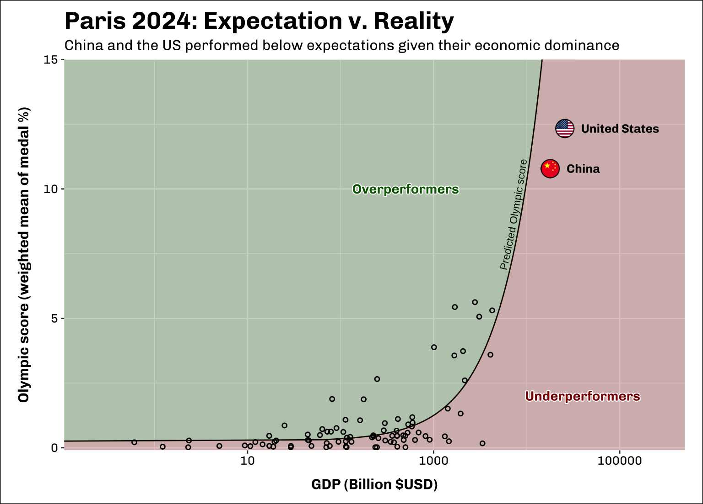

## Data wrangling
library(dplyr)
library(tidyr)
library(readr)
library(lay)
library(countrycode)
## Plots and tables
library(ggplot2)
library(shadowtext)
library(geomtextpath)
library(scales)
library(gt)
## Stats
library(spaMM)Introduction: What have we learnt so far?
In my last post, we saw how medal inflation and economic advantage can make it tricky to properly assess a country’s Olympic performance. Now that we have the final results from Paris 2024, we can use our new found knowledge to find the countries that over-(and under) performed at this year’s event.
The data
We start out where we left off in the last blog with data on medal percentages between 1996 and 2016. We will add to this with new results from Paris 2024. To include information on GDP, we will use data from the World Bank.
The basics: Clean the data and add some context
Packages this time are: dplyr, tidyr, readr, and lay to work with data and ggplot2 and shadowtext to create plots and scales and gt when building tables. This time we’ll also include spaMM, which we’ll use for some basic statistical modelling. Again, countrycode is needed to convert NOC to ISO3c.
First, let’s read in the data we finished with last time and the new data from Paris.
## Load data
(historical_data <- readr::read_csv("./data/training_data.csv", show_col_type = FALSE))# A tibble: 2,463 × 6
Year ISO3c country perc_Gold perc_Silver perc_Bronze
<dbl> <chr> <chr> <dbl> <dbl> <dbl>
1 2016 USA United States 15.0 12.1 10.6
2 2016 GBR Great Britain 8.79 7.52 4.72
3 2016 CHN China 8.47 5.88 7.22
4 2016 RUS Russia 6.19 5.56 5.56
5 2016 DEU Germany 5.54 3.27 4.17
6 2016 JPN Japan 3.91 2.61 5.83
7 2016 FRA France 3.26 5.88 3.89
8 2016 KOR South Korea 2.93 0.980 2.5
9 2016 ITA Italy 2.61 3.92 2.22
10 2016 AUS Australia 2.61 3.59 2.78
# ℹ 2,453 more rowsparis <- readr::read_csv("./data/paris_results.csv", show_col_types = FALSE) |>
mutate(across(Gold:Total, \(x) tidyr::replace_na(x, 0)),
ISO3c_countrycode = countrycode::countrycode(NOC, origin = "ioc", destination = "iso3c"),
ISO3c = case_when(!is.na(ISO3c_countrycode) ~ ISO3c_countrycode,
NOC == "KOS" ~ "XKX",
NOC == "SIN" ~ "SGP",
is.na(ISO3c_countrycode) ~ NOC),
country = countrycode::countrycode(ISO3c, origin = "iso3c", destination = "country.name")) |>
select(country, ISO3c, Gold:Total)
paris# A tibble: 92 × 6
country ISO3c Gold Silver Bronze Total
<chr> <chr> <dbl> <dbl> <dbl> <dbl>
1 United States USA 40 44 42 126
2 China CHN 40 27 24 91
3 Japan JPN 20 12 13 45
4 Australia AUS 18 19 16 53
5 France FRA 16 26 22 64
6 Netherlands NLD 15 7 12 34
7 United Kingdom GBR 14 22 29 65
8 South Korea KOR 13 9 10 32
9 Italy ITA 12 13 15 40
10 Germany DEU 12 13 8 33
# ℹ 82 more rowsWe know from last time that accounting for the number of available medals is important. There were 71 more medals available at Paris 2024 than Rio 2016 and we need to reflect that in the data!
Show the code
total_gold <- sum(paris$Gold)
total_silver <- sum(paris$Silver)
total_bronze <- sum(paris$Bronze)
total <- sum(paris$Total)
paris_perc <- paris |>
mutate(perc_Gold = (Gold/total_gold)*100,
perc_Silver = (Silver/total_silver)*100,
perc_Bronze = (Bronze/total_bronze)*100,
perc_Total = (Total/total)*100) |>
select(country, ISO3c, perc_Gold:perc_Total)
paris_perc# A tibble: 92 × 6
country ISO3c perc_Gold perc_Silver perc_Bronze perc_Total
<chr> <chr> <dbl> <dbl> <dbl> <dbl>
1 United States USA 12.2 13.3 10.9 12.1
2 China CHN 12.2 8.18 6.23 8.72
3 Japan JPN 6.08 3.64 3.38 4.31
4 Australia AUS 5.47 5.76 4.16 5.08
5 France FRA 4.86 7.88 5.71 6.13
6 Netherlands NLD 4.56 2.12 3.12 3.26
7 United Kingdom GBR 4.26 6.67 7.53 6.23
8 South Korea KOR 3.95 2.73 2.60 3.07
9 Italy ITA 3.65 3.94 3.90 3.83
10 Germany DEU 3.65 3.94 2.08 3.16
# ℹ 82 more rowsPredicted performance
We also know that medal performance is strongly correlated to a countries GDP. To assess current performance, we can model the relationship between GDP and Olympic results using data from previous years (1996 - 2016) and use it to predict outcomes for 2024. The difference between predicted and actual scores allows us to identify those countries that performed better (or worse) than expected.
The first sticking point we encounter is that Olympic performance is actually three variables: Gold, Silver, and Bronze medals. To model things more easily, we want to convert these into a single score. To make sure this single score reflects the difference in importance between different medal types we can use a weighted mean. Here we’ll consider gold medals to be 3x more valuable than silver, and silver as 3x more valuable than bronze.
\((Gold*\frac{9}{13} + Silver*\frac{3}{13} + Bronze*\frac{1}{13})\)
historical_data_score <- historical_data |>
filter(Year >= 1996) |>
mutate(score = lay::lay(pick(c(perc_Gold, perc_Silver, perc_Bronze)),
\(x) sum(x * c(9/13, 3/13, 1/13))))Ranking countries using this single Olympic Score™ returns similar results to using traditional medal rankings (see Appendix), and gives us a good metric to work with moving forward.
Now that we have a single response variable for our model, we then need to add GDP as a predictor. In the previous blog we considered GDP in the current Olympic year. Because we don’t have official GDP statistics for 2024, let’s adjust this a bit to use GDP of the year preceding the Olympics. I expect GDP to be very strongly temporally auto-correlated (i.e. data from one year is related to data in the previous year) so this shouldn’t cause too many problems.
Show the code
GDP <- readr::read_csv("./data/GDP_data.csv", skip = 4, show_col_types = FALSE) |>
## Pivot longer to allow us to left join
tidyr::pivot_longer(cols = `1960`:`2023`, names_to = "year", values_to = "gdp") |>
## Convert year to year + 1 to join with Olympic data from the *following year*
mutate(year = as.numeric(year) + 1) |>
janitor::clean_names() |>
select(country_code:indicator_name, year, gdp) |>
## Remove countries with no GDP data
filter(!is.na(gdp)) |>
mutate(gdp_bil = gdp/1e9) |>
select(country_code, year, gdp_bil)
historical_data_gdp <- historical_data_score |>
## Join in GDP data
left_join(GDP, by = c("ISO3c" = "country_code", "Year" = "year")) |>
filter(!is.na(gdp_bil))
print(paste("Correlation Olympic score and GDP:", round(cor(historical_data_gdp$score, historical_data_gdp$gdp_bil), 2)))[1] "Correlation Olympic score and GDP: 0.76"Unsurprisingly, our single Olympic Score™ is strongly correlated with GDP (0.76), with countries that have higher GDP tending to have a higher Olympic Score™.
Now we can use the package spaMM to fit a linear mixed-effects model. We don’t need to go into the statistical details here, but basically this model allows us to estimate the effect of GDP on Olympic score but taking into account that each Olympic games has its own idiosyncrasies that will affect results. This model will be the basis for our Paris assessment.
model <- spaMM::fitme(score ~ gdp_bil + (1|Year), data = historical_data_gdp)Actual results
Let’s convert our Paris data into a comparable format to our historical data by calculating the single Olympic Score™ and adding GDP from the previous year. Then we can use our model from above to include expected medal score given known GDP.
Show the code
paris_perc_gdp <- paris_perc |>
mutate(score = lay::lay(pick(c(perc_Gold, perc_Silver, perc_Bronze)), \(x) sum(x * c(9/13, 3/13, 1/13)))) |>
left_join(GDP |>
filter(year == 2023) |>
select(-year), by = c("ISO3c" = "country_code")) |>
filter(!is.na(gdp_bil))
paris_predicted <- paris_perc_gdp
paris_predicted$exp_score <- as.numeric(predict(model, newdata = paris_predicted, re.form = NA))
paris_predicted <- paris_predicted |>
## Calculate absolute and relative difference between expected and actual score
mutate(score_diff_abs = score - exp_score,
score_diff_rel = score/exp_score)
paris_predicted |>
select(country, gdp_bil, score, exp_score)# A tibble: 88 × 4
country gdp_bil score exp_score
<chr> <dbl> <dbl> <dbl>
1 United States 25700 12.3 26.1
2 China 17900 10.8 18.3
3 Japan 4260 5.31 4.53
4 Australia 1690 5.44 1.95
5 France 2780 5.62 3.04
6 Netherlands 1010 3.89 1.26
7 United Kingdom 3090 5.06 3.36
8 South Korea 1670 3.56 1.93
9 Italy 2070 3.73 2.33
10 Germany 4080 3.59 4.35
# ℹ 78 more rowsShow the code
pred_data <- data.frame(gdp_bil = seq(min(historical_data_gdp$gdp_bil), max(historical_data_gdp$gdp_bil) + 15000, length.out = 500))
pred_data$score <- as.numeric(predict(model, newdata = pred_data, re.form = NA))
image_data <- data.frame(ISO3c = c("USA", "CHN"),
imgURL = c("./data/USAflag.png",
"./data/CHNflag.png"))
paris_perc_gdp_png <- paris_perc_gdp |>
left_join(image_data, by = c("ISO3c")) |>
filter(!is.na(imgURL))
ggplot() +
geomtextpath::geom_textpath(data = pred_data |>
filter(gdp_bil > 6500),
aes(x = gdp_bil, y = score, label = "Predicted Olympic score"),
text_only = TRUE, hjust = 0, vjust = 0, size = 3) +
geom_line(data = pred_data,
aes(x = gdp_bil, y = score)) +
geom_ribbon(data = pred_data,
aes(x = gdp_bil, ymin = score, ymax = Inf),
fill = "darkgreen", alpha = 0.25) +
geom_ribbon(data = pred_data |> bind_rows(data.frame(gdp_bil = Inf,
score = max(pred_data$score))),
aes(x = gdp_bil, ymin = score, ymax = -Inf),
fill = "darkred", alpha = 0.25) +
shadowtext::geom_shadowtext(aes(x = c(500, 40000),
y = c(10, 2),
label = c("Overperformers", "Underperformers")),
fontface = "bold", family = "Chivo",
colour = c("darkgreen", "darkred"),
bg.colour = "white") +
geom_point(data = paris_perc_gdp,
aes(x = gdp_bil, y = score),
shape = 21, size = 1.25, stroke = 0.75) +
ggimage::geom_image(data = paris_perc_gdp_png,
aes(x = gdp_bil, y = score, image = imgURL), size = 0.05) +
geom_text(data = paris_perc_gdp_png,
aes(x = gdp_bil*1.5, y = score, label = country),
fontface = "bold", family = "Chivo", hjust = 0, size = 3.5) +
labs(title = "Paris 2024: Expectation v. Reality",
subtitle = "China and the US performed below expectations given their economic dominance",
y = "Olympic score (weighted mean of medal %)", x = "GDP (Billion $USD)") +
scale_x_log10() +
coord_cartesian(ylim = c(-0.1, 15),
xlim = c(min(paris_perc_gdp$gdp_bil) - 0.5, 500000), expand = FALSE) +
theme(plot.title = element_text(size = 20, family = "Chivo", face = "bold"),
plot.subtitle = element_text(size = 12, family = "Chivo"),
plot.margin = margin(t = 10, b = 10, l = 15, r = 15),
axis.title = element_text(size = 12, face = "bold", family = "Chivo"),
axis.title.x = element_text(margin = margin(t = 10)),
axis.title.y = element_text(margin = margin(r = 10)),
axis.text = element_text(colour = "black", size = 10, family = "Chivo"),
plot.background = element_rect(colour = "black"),
panel.grid = element_line(colour = "white"))
In the above plot, the solid black line shows the predicted Olympic score from our model based on country GDP. Each point shows the actual Olympic score of a country at Paris 2024. Points above the line (green area) show countries that scored higher than expected, given their GDP. Points below the line (red area) are countries that had lower scores than our model predicted.
The first thing we can see is that both China and the US underperformed at this years Olympics, given their economic clout. With only ~12% of Gold medals each, they fell well below the previous records they set as host nations in Beijing 2008 (China: 16.9%) and Atlanta 1996 (USA: 16.2%).
Warning
Make sure to notice the log scale on the x-axis of the plots. Using a log scale is invaluable to show massive economies like the US on the same plot as much smaller economies; however, remember this means the x-axis does not increase linearly. We actually model a linear relationship between GDP and Olympic score (i.e. one $USD change in GDP always has the same effect), but this looks non-linear in the plots due to the log scale.
Below this headline, we can see other countries that greatly diverged from our modelled expectations. To look for the biggest over and under-performers at Paris 2024 we calculate the proportional difference between a countries actual score and the expected score from our GDP model.
Show the code
best_and_worst <- paris_predicted |>
arrange(score_diff_rel) |>
slice(1:5, (n()-4):n()) |>
select(country:perc_Total, score, exp_score, score_diff_rel, score_diff_abs)
## Plotting
ylim = c(-0.5, 5)
xlim = c(20, 7500)
pred_data <- data.frame(gdp_bil = seq(min(xlim), max(xlim) + 15000, length.out = 500))
pred_data$score <- as.numeric(predict(model, newdata = pred_data, re.form = NA))
image_data <- data.frame(ISO3c = best_and_worst$ISO3c,
imgURL = paste0("./data/", best_and_worst$ISO3c, "flag.png"))
paris_perc_gdp_png <- paris_perc_gdp |>
left_join(image_data, by = c("ISO3c")) |>
filter(!is.na(imgURL)) |>
mutate(x = case_when(ISO3c == "QAT" ~ gdp_bil*0.675,
TRUE ~ gdp_bil * 1.1),
y = case_when(ISO3c == "QAT" ~ score - 0.2,
TRUE ~ score + 0.2))
ggplot() +
geomtextpath::geom_textpath(data = pred_data |>
filter(gdp_bil > 1000 & gdp_bil < 7500),
aes(x = gdp_bil, y = score, label = "Predicted Olympic score"),
text_only = TRUE, hjust = 0, vjust = 0, size = 3) +
geom_line(data = pred_data,
aes(x = gdp_bil, y = score)) +
geom_ribbon(data = pred_data,
aes(x = gdp_bil, ymin = score, ymax = Inf),
fill = "darkgreen", alpha = 0.25) +
geom_ribbon(data = pred_data |> bind_rows(data.frame(gdp_bil = Inf,
score = max(pred_data$score))),
aes(x = gdp_bil, ymin = score, ymax = -Inf),
fill = "darkred", alpha = 0.25) +
shadowtext::geom_shadowtext(aes(x = c(500, 40000),
y = c(10, 2),
label = c("Overperformers", "Underperformers")),
fontface = "bold", family = "Chivo",
colour = c("darkgreen", "darkred")) +
geom_point(data = paris_perc_gdp,
aes(x = gdp_bil, y = score),
shape = 21, size = 1.25, stroke = 0.75, alpha = 0.25) +
ggimage::geom_image(data = paris_perc_gdp_png,
aes(x = gdp_bil, y = score, image = imgURL), size = 0.075) +
geom_text(data = paris_perc_gdp_png,
aes(x = x, y = y, label = country),
fontface = "bold", family = "Chivo", hjust = 0, size = 3.5) +
labs(title = "Paris 2024: Expectation v. Reality",
subtitle = "Uzbekistan scored 5x higher than expected, while India only achieved\n5% of their expected Olympic score.",
y = "Olympic score (weighted mean of medal %)", x = "GDP (Billion $USD)") +
scale_x_log10() +
coord_cartesian(ylim = ylim,
xlim = xlim, expand = FALSE, clip = "on") +
theme(plot.title = element_text(size = 20, family = "Chivo", face = "bold"),
plot.subtitle = element_text(size = 12, family = "Chivo"),
plot.margin = margin(t = 10, b = 10, l = 15, r = 15),
axis.title = element_text(size = 12, face = "bold", family = "Chivo"),
axis.title.x = element_text(margin = margin(t = 10)),
axis.title.y = element_text(margin = margin(r = 10)),
axis.text = element_text(colour = "black", size = 10, family = "Chivo"),
plot.background = element_rect(colour = "black"))The over and underperformers
We can now see those countries that most exceeded or fell short of their Olympic expectations. The outcome of the New Zealand campaign is a direct comparison to that of Qatar and Peru. In 2023, all three countries had a GDP around 250 billion $USD, yet New Zealand went home with 10 Gold medals while Qatar and Peru failed to win a single Gold or Silver medal.
India stands out as a particularly poor performer. The world’s 5th largest economy and most populous nation failed to win a single Gold medal. The return of cricket to the Olympic stage for LA28 might present team India with an opportunity to improve their Olympic fortunes. In contrast, Uzbekistan had a particularly impressive performance, snagging 8 gold medals for boxing and martial arts and scoring almost 100x higher than Slovakia despite having a smaller economy.
Show the code
flag_db <- readr::read_csv("data/Country_Flags.csv", show_col_type = FALSE) %>%
#Convert country names into 3-letter country codes
mutate(Code_raw = countrycode(sourcevar = Country, origin = "country.name", destination = "iso3c", warn = FALSE),
## There are a few cases that need to be specified manually
Code = case_when(Country == "Soviet Union" ~ "SUN",
Country == "East Germany" ~ "DDR",
Country == "Yugoslavia" ~ "YUG",
Country == "Olympics" ~ "EUN",
TRUE ~ Code_raw)) %>%
select(Code, flag_URL = ImageURL)
plot_data <- best_and_worst |>
mutate(score_diff_rel = score_diff_rel*100) |>
select(country, ISO3c, score, exp_score, score_diff_rel) |>
left_join(flag_db, by = c("ISO3c" = "Code")) |>
select(flag_URL, country, score:score_diff_rel) |>
arrange(desc(score_diff_rel))
rel_score_palette <- col_numeric(c("darkred", "darkgreen"), domain = c(min(plot_data$score_diff_rel),
max(plot_data$score_diff_rel)), alpha = 0.75)
plot_data |>
gt() |>
cols_label(country = "Country",
exp_score = "Expected score",
score = "Actual score",
score_diff_rel = "% difference") %>%
tab_header(title = md("Paris 2024: Expectation v. Reality")) %>%
tab_source_note(source_note = md("Olympic data: www.sports-reference.com<br>GDP data: World Bank Group")) %>%
tab_style(
locations = cells_column_labels(columns = everything()),
style = list(
cell_borders(sides = "bottom", weight = px(3)),
cell_text(weight = "bold")
)
) %>%
tab_style(
locations = cells_title(groups = "title"),
style = list(
cell_text(weight = "bold", size = 24)
)
) %>%
data_color(columns = c(score_diff_rel),
fn = rel_score_palette) %>%
fmt_number(columns = c(score, exp_score),
decimals = 2) %>%
fmt_number(columns = c(score_diff_rel),
decimals = 1, suffixing = "%") %>%
opt_all_caps() %>%
opt_table_font(
font = list(
google_font("Chivo"),
default_fonts()
)
) %>%
cols_width(c(country) ~ px(125),
c(score, exp_score, score_diff_rel) ~ px(100)) %>%
tab_options(
column_labels.border.top.width = px(3),
column_labels.border.top.color = "transparent",
table.border.top.color = "transparent",
table.border.bottom.color = "transparent",
data_row.padding = px(3),
source_notes.font.size = 12,
heading.align = "left") |>
gt::text_transform(
#Apply a function to a column
locations = cells_body(c(flag_URL)),
fn = function(x) {
#Return an image of set dimensions
web_image(
url = x,
height = 12
)
}
) %>%
#Hide column header flag_URL and reduce width
cols_width(c(flag_URL) ~ px(30)) %>%
cols_label(flag_URL = "")| Paris 2024: Expectation v. Reality | ||||
| Country | Actual score | Expected score | % difference | |
|---|---|---|---|---|
 |
Uzbekistan | 1.88 | 0.33 | 579.0 |
 |
New Zealand | 2.65 | 0.49 | 539.0 |
 |
Hungary | 1.87 | 0.42 | 443.8 |
 |
Georgia | 0.86 | 0.27 | 320.4 |
 |
Netherlands | 3.89 | 1.26 | 308.2 |
 |
Slovakia | 0.02 | 0.36 | 5.5 |
 |
India | 0.17 | 3.62 | 4.7 |
 |
Qatar | 0.02 | 0.48 | 4.2 |
 |
Peru | 0.02 | 0.49 | 4.1 |
 |
Singapore | 0.02 | 0.75 | 2.7 |
| Olympic data: www.sports-reference.com GDP data: World Bank Group |
||||
The Conclusion: The winners board
A simple model with national GDP is a fairly crude method to estimate Olympic performance. It doesn’t account for a countries level of development and how much of GDP is invested in sports. In the case of India, it also fails to consider whether the sports invested in (i.e. cricket) are included in the Olympics. Some metric like the UNDP Human Development Index might be one way to include more details about each country. Still, GDP does begin to account for a country’s availabe resources that could go towards training Olympic athletes, and does seem to provide some (basic) predictive power. Adding more sophisticated data would be ideal, but finding this type of data for close to 100 countries is easier said than done. Maybe we can reconvene again in 4 years time to refine and improve our Olympic modelling.
Appendix: Assessing our single Olympic Score
How does our weighted Olympics Score™ compare to traditional medal tally ranks?
Show the code
flag_db <- readr::read_csv("data/Country_Flags.csv", show_col_type = FALSE) %>%
#Convert country names into 3-letter country codes
mutate(Code_raw = countrycode(sourcevar = Country, origin = "country.name", destination = "iso3c", warn = FALSE),
## There are a few cases that need to be specified manually
Code = case_when(Country == "Soviet Union" ~ "SUN",
Country == "East Germany" ~ "DDR",
Country == "Yugoslavia" ~ "YUG",
Country == "Olympics" ~ "EUN",
TRUE ~ Code_raw)) %>%
select(Code, flag_URL = ImageURL)
score_diffs <- historical_data_score |>
arrange(desc(Year), desc(perc_Gold), desc(perc_Silver), desc(perc_Bronze)) |>
group_by(Year) |>
mutate(trad_rank = 1:n()) |>
ungroup() |>
arrange(desc(Year), desc(score)) |>
group_by(Year) |>
mutate(score_rank = 1:n()) |>
ungroup() |>
mutate(score_diff = trad_rank - score_rank) |>
arrange(desc(score_diff))
plot_data <- score_diffs |>
slice(1:5, (n()-4):n()) |>
left_join(flag_db, by = c("ISO3c" = "Code")) |>
select(flag_URL, Year, country, perc_Gold:score_diff)
rank_change_palette <- col_numeric(c("darkred", "white", "darkgreen"), domain = c(min(score_diffs$score_diff),
max(score_diffs$score_diff)), alpha = 0.75)
plot_data |>
gt() |>
cols_label(country = "Country",
perc_Gold = "Gold (%)",
perc_Silver = "Silver (%)",
perc_Bronze = "Bronze (%)",
score = "Score",
trad_rank = "Rank (traditional)",
score_rank = "Rank (score)",
score_diff = "Difference") %>%
tab_header(title = md("Largest changes in Olympic rank"),
subtitle = paste0("Correlation: ",
round(cor(score_diffs$trad_rank,
score_diffs$score_rank,
## Kendall better suited for rank data
method = "kendall"), 2))) %>%
tab_source_note(source_note = "Data: www.sports-reference.com") %>%
tab_style(
locations = cells_column_labels(columns = everything()),
style = list(
cell_borders(sides = "bottom", weight = px(3)),
cell_text(weight = "bold")
)
) %>%
tab_style(
locations = cells_title(groups = "title"),
style = list(
cell_text(weight = "bold", size = 24)
)
) %>%
data_color(columns = c(score_diff),
fn = rank_change_palette) %>%
fmt_number(columns = c(perc_Gold, perc_Silver, perc_Bronze, score),
decimals = 2) %>%
opt_all_caps() %>%
opt_table_font(
font = list(
google_font("Chivo"),
default_fonts()
)
) %>%
cols_width(c(country) ~ px(175),
c(perc_Gold,
perc_Silver,
perc_Bronze,
score) ~ px(100)) %>%
tab_options(
column_labels.border.top.width = px(3),
column_labels.border.top.color = "transparent",
table.border.top.color = "transparent",
table.border.bottom.color = "transparent",
data_row.padding = px(3),
source_notes.font.size = 12,
heading.align = "left") |>
gt::text_transform(
#Apply a function to a column
locations = cells_body(c(flag_URL)),
fn = function(x) {
#Return an image of set dimensions
web_image(
url = x,
height = 12
)
}
) %>%
#Hide column header flag_URL and reduce width
cols_width(c(flag_URL) ~ px(30)) %>%
cols_label(flag_URL = "")| Largest changes in Olympic rank | |||||||||
| Correlation: 0.99 | |||||||||
| Year | Country | Gold (%) | Silver (%) | Bronze (%) | Score | Rank (traditional) | Rank (score) | Difference | |
|---|---|---|---|---|---|---|---|---|---|
 |
2000 | Brazil | 0.00 | 2.00 | 1.84 | 0.60 | 53 | 32 | 21 |
 |
2000 | Jamaica | 0.00 | 2.00 | 0.92 | 0.53 | 54 | 36 | 18 |
 |
2008 | Armenia | 0.00 | 0.00 | 1.70 | 0.13 | 78 | 61 | 17 |
 |
2016 | Azerbaijan | 0.33 | 2.29 | 2.78 | 0.97 | 39 | 25 | 14 |
 |
2008 | Cuba | 0.66 | 3.64 | 3.12 | 1.54 | 28 | 15 | 13 |
 |
1996 | Turkey | 1.48 | 0.37 | 0.34 | 1.13 | 20 | 25 | -5 |
 |
2008 | Romania | 1.32 | 0.33 | 0.85 | 1.06 | 17 | 23 | -6 |
 |
2008 | Ethiopia | 1.32 | 0.33 | 0.57 | 1.04 | 18 | 24 | -6 |
 |
2016 | Greece | 0.98 | 0.33 | 0.56 | 0.79 | 26 | 33 | -7 |
 |
2016 | Argentina | 0.98 | 0.33 | 0.00 | 0.75 | 27 | 34 | -7 |
| Data: www.sports-reference.com | |||||||||
We can see the most extreme differences between ranks with our Olympic score™ and traditional rankings in the table above. Our Olympic score tends to provide more rewards for lesser medals. For example, at Sydney 2000 Brazil failed to win any Golds, but received around 2% of both Silver and Bronze medals and is given a boost with our Olympic score. Conversely, at Rio 2016 Argentina won 3 gold medals (0.98% of all available Golds) but won very few other medals and so is ranked down using our Olympic score. Still, ranks using the different methods are highly correlated (Kendall’s \(\tau\): 0.99) and 78% of countries see no rank change at all. This gives us some confidence to use our singular Olympic Score™ for further analyses.